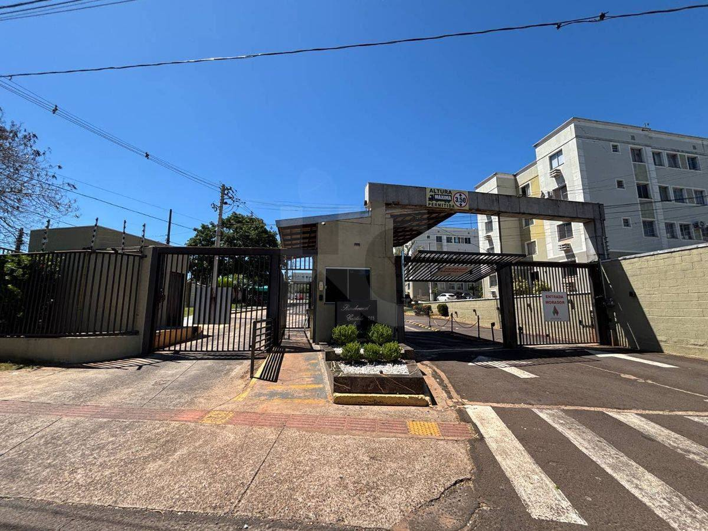
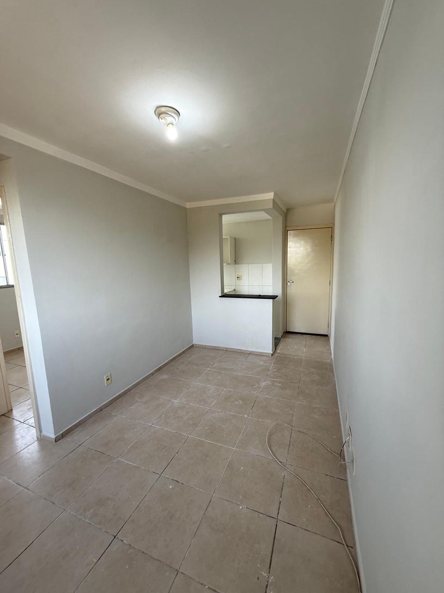
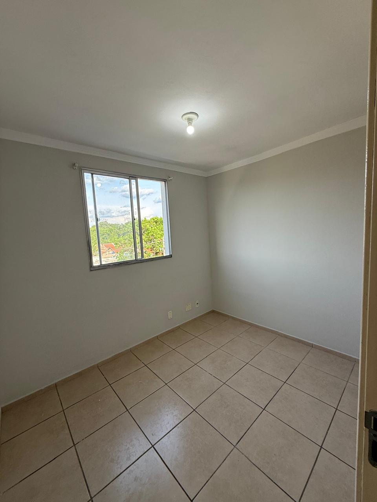
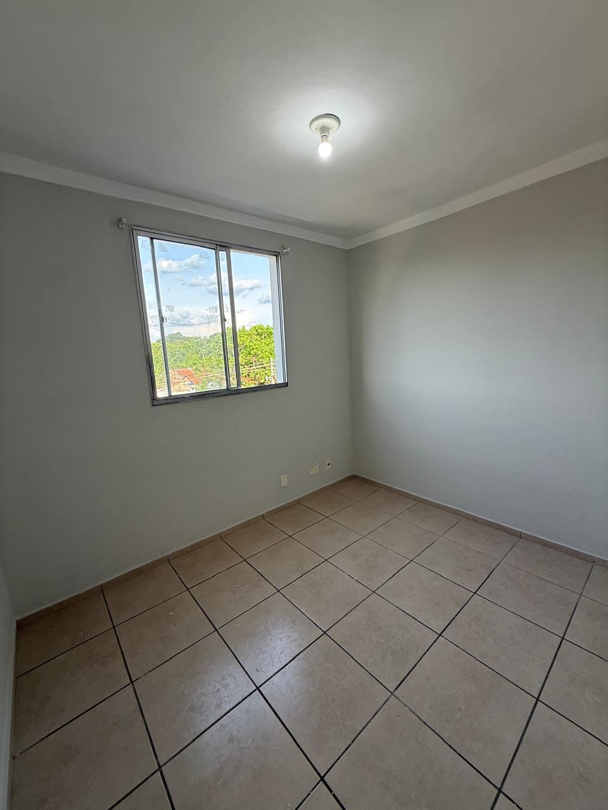
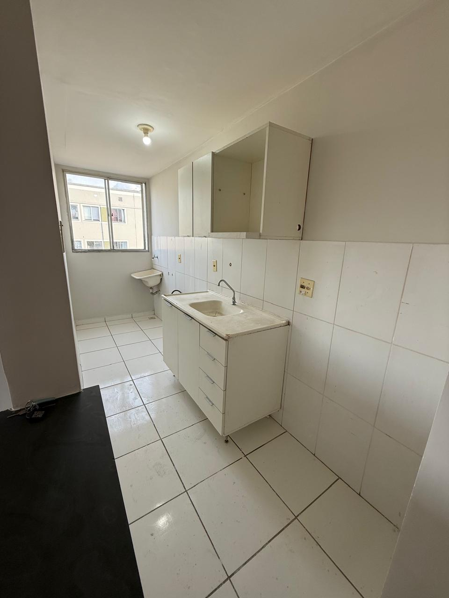
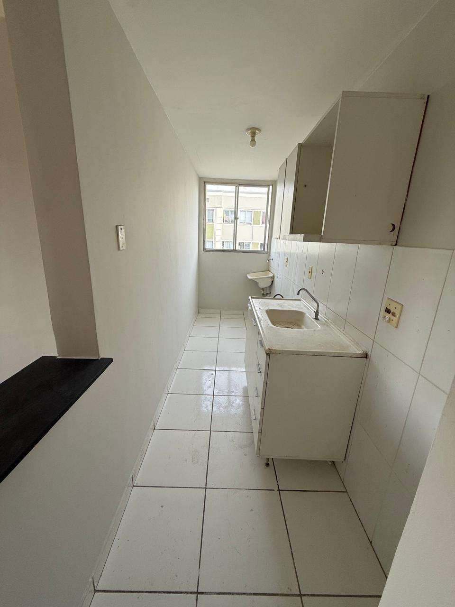
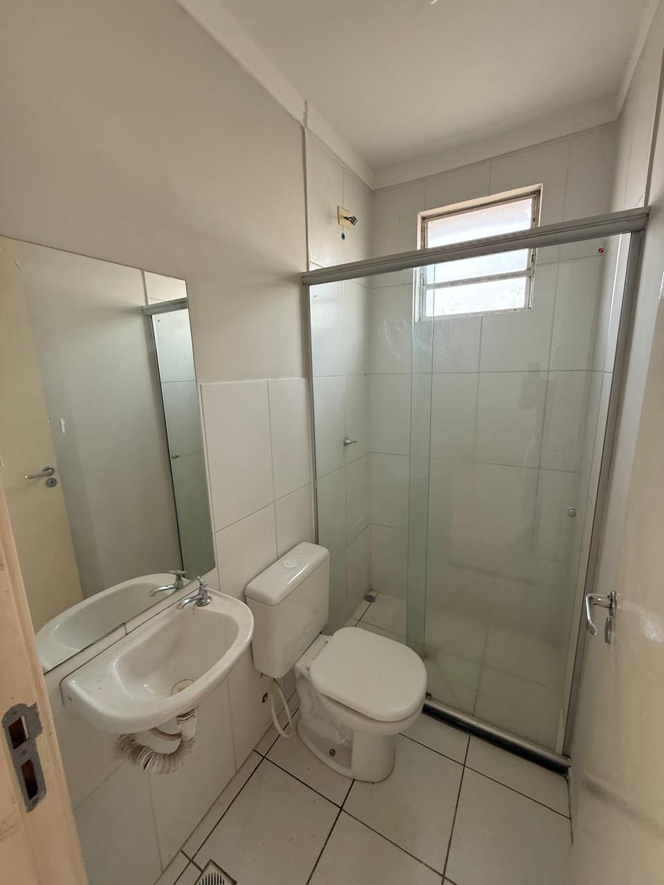

R$ 1.600/mês — condomínio, água, gás e IPTU inclusos
Apartamento de 2 quartos no Residencial Parque Castelo de Luxemburgo, 4º andar com acesso por escadas e vista para a mata. Cozinha com armários e banheiro social.
Avenida Senador Antônio Mendes Canale — Pioneiros, Campo Grande/MS. Próximo à UFMS.







Caução equivalente a 3 meses de aluguel (R$ 4.800,00), sujeito a análise cadastral.
Felipe M. Yonaha Mendes — CRECI-MS 15588-F